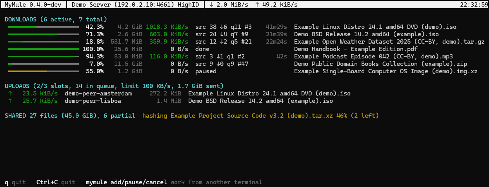
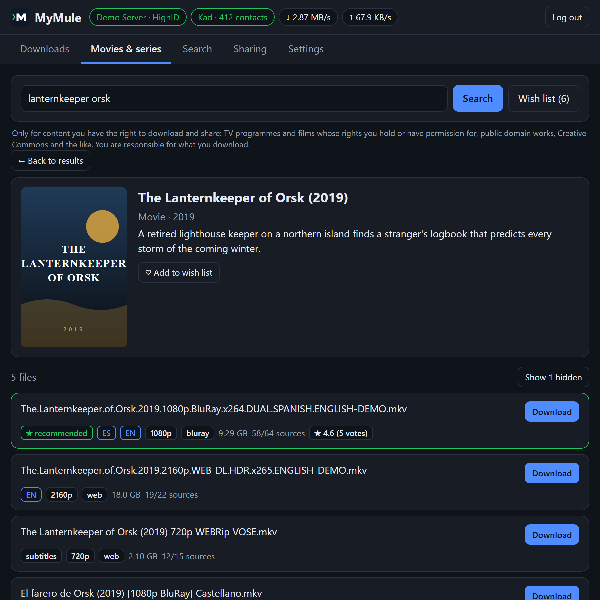

Um cliente leve para a rede eMule, eD2K e Kad, escrito em Go. Um único programa pequeno e sem dependências, para Windows, Linux, macOS, FreeBSD, placas ARM e NAS, que usa cerca de 15 MB de RAM.

mymule top, a visão ao vivo no terminal, com dados de demonstração.Downloads, buscas, compartilhamento e servidores em qualquer navegador, inclusive no celular. Busque filmes e séries pelo título e receba os arquivos avaliados por idioma e qualidade. Ou coloque-os na lista de desejos: o MyMule os pega sozinho assim que saírem.
Um serviço em segundo plano com comandos curtos, e mymule top, uma visão ao vivo em tela cheia onde você também pode buscar e gerenciar downloads.
Um indexador Torznab e um cliente de download compatível com qBittorrent: o eD2K vira mais uma fonte para Radarr, Sonarr, Lidarr, Readarr e Prowlarr.
Uma pequena API JSON para scripts: PHP, Python, shell, tarefas cron e automação residencial.

Qualquer sistema com Docker, inclusive NAS e Raspberry Pi (amd64, arm64 e armv7). Em uma pasta vazia:
docker run -d --name mymule --restart unless-stopped -e PUID=1000 -e PGID=1000 -v ./config:/config -v ./downloads:/downloads -p 4662:4662/tcp -p 4672:4672/udp -p 127.0.0.1:4711:4711/tcp ghcr.io/i234dev/mymule:latestDepois abra http://localhost:4711 e entre com o api_key de config/mymule.conf. Prefere o Compose? Use o docker-compose.yml pronto e rode docker compose up -d. Mais detalhes no guia do Docker (em inglês).
Com o Homebrew:
brew install i234dev/tap/mymuleAs configurações e os downloads ficam em ~/MyMule. Para atualizar: brew upgrade mymule.
Com o Scoop:
scoop bucket add mymule https://github.com/i234dev/scoop-bucket
scoop install mymuleAs configurações e os downloads ficam em %USERPROFILE%\scoop\persist\mymule. Para atualizar: scoop update mymule.
Windows, Linux, macOS e FreeBSD, para Intel/AMD e ARM: baixe o arquivo para o seu sistema em Releases e descompacte onde quiser. O MyMule é portátil: as configurações e os downloads ficam ao lado do programa.
Sem Docker, inicie e use pelo terminal:
mymule start # inicia o motor em segundo plano
mymule search -links ubuntu # busca; -links mostra links ed2k://
mymule add "ed2k://|file|...|/"
mymule top # visão ao vivo (q para sair)
mymule stopFora do Docker a interface web vem desligada: coloque web_ui = true em mymule.conf, reinicie o MyMule e abra http://127.0.0.1:4711.
Cada versão vem com um arquivo SHA256SUMS e um atestado assinado de como foi compilada. No README (em inglês) estão a configuração, a interface web, o uso em servidor ou NAS e a segurança; a API e o guia *arr têm páginas próprias.
Sim. O MyMule entra nos mesmos servidores eD2K e na mesma rede Kad, então você baixa de e compartilha com todos que usam eMule, aMule e outros clientes compatíveis.
Com HighID os outros usuários podem se conectar diretamente a você, então você consegue muito mais fontes e downloads mais rápidos. O MyMule abre sozinho as portas 4662 (TCP) e 4672 (UDP) no roteador com UPnP ou NAT-PMP, se o roteador permitir; senão, redirecione-as à mão para o computador onde o MyMule roda. Sem HighID o MyMule funciona do mesmo jeito, com LowID e menos fontes.
Tudo o que outros usuários, servidores e nós Kad enviam é verificado e limitado, e um pacote malicioso encerra só aquela conexão, não o programa. A interface web e a API só respondem no seu próprio computador, a menos que você mude isso, e sempre pedem uma chave. Nunca redirecione a porta 4711 no roteador. Lembre que o eD2K é uma rede pública: os outros veem seu endereço IP e os arquivos que você compartilha.
O MyMule é um cliente para um protocolo aberto de troca de arquivos, assim como um navegador é para a web. O que você baixa e compartilha depende de você: use apenas com conteúdo que você tem direito de compartilhar, como software livre, obras de domínio público ou seus próprios arquivos. Leia os termos de uso.
O MyMule começou como um projeto pessoal, antes de eu saber que o aMule estava sendo retomado. Hoje há ótimas opções: o aMule é o cliente maduro e de longa data, de novo em desenvolvimento ativo e com mais funções clássicas do eMule; com o aMuTorrent você tem ainda uma interface web moderna e suporte ao Sonarr e ao Radarr. O MyMule é um cliente menor e independente, escrito do zero: pode servir para você se quiser um único programa, sem mais nada para instalar e conectar, uma biblioteca que encontra filmes e séries pelo título e os renomeia para você, e um consumo mínimo. Se você precisa de algo que o MyMule não tem, o aMule é uma ótima escolha. Os dois compartilham a mesma rede, então de qualquer forma você ajuda a mantê-la viva.
Alguns extras do eMule, como amigos e chat, não foram implementados. Ideias e relatos de bugs são bem-vindos no GitHub.
Sim: é software livre sob a GNU GPL v3, sem anúncios e sem conta para criar. O código-fonte está no GitHub.
Use o MyMule apenas com conteúdo que você tem permissão para baixar e compartilhar. O eD2K é uma rede pública: os outros usuários veem seu endereço IP e os arquivos que você compartilha. Leia os termos de uso e o aviso legal antes de usar.